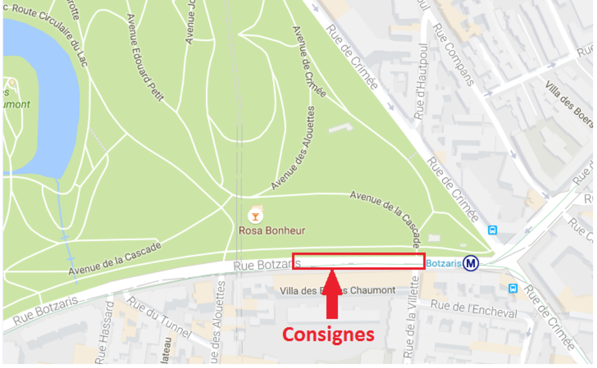

Le Turtle Pizza Run, l'event running où tu bouffes autre chose que des raisins secs sur une course!

Cette 1ère édition aura lieu dans les Buttes chaumonts dans le 19ème arrondissement le Dimanche 18 Novembre 2016 et est ouverte aux participants de tous âges.
Detail: https://www.strava.com/routes/7084894 Le parcours se compose de 3 boucles des buttes chaumont de 2.2 km. Distance 2.2km D- 63m D+ 103m
Le départ et l’arrivée auront lieu au même endroit, c’est-à-dire à l'entrée du parc située à l’angle de la Crimée et de la rue Botzaris.
- Elle sera située sur le trottoir (juste avant l’arrivée).
- A l'arrivée des coureurs, les pizzas seront disponibles dans la boîte à pizza.
- Chaque coureur peut repartir uniquement après avoir mangé sa part de pizza.
- De l’eau sera mise à disposition. (Attention, le gobelet doit être jeté dans la poubelle avant de repartir)
- Des bénévoles seront chargés de donner les pizzas.
- Des juges seront chargés de marquer d’un signe sur l’avant-bras ou la main afin de valider le point de contrôle (Pizza entièrement dans la bouche + gobelet à la poubelle).

A partir de 11h, vous disposerez de consignes pour déposer vos affaires. Prenez l’essentiel et laissez vos objets de valeur à la maison.
Attention munissez-vous de votre justificatif de paiement à partir de tilt.com.
L’emplacement se trouve au 74 rue Botzaris 75019, tout près du métro Botzaris ligne 7bis.

Etant donné que cette course est non officielle, le parc des buttes chaumont ne nous est pas réservé. Ils vous sera donc demandé de faire attention aux courgettes qui se promènent.
- Les pizzas seront des Pizza Margherita. Faites attention à vos allergies
- On aura un after-run au Belushis, on a négocié pour vous
les bières à 5€!!!